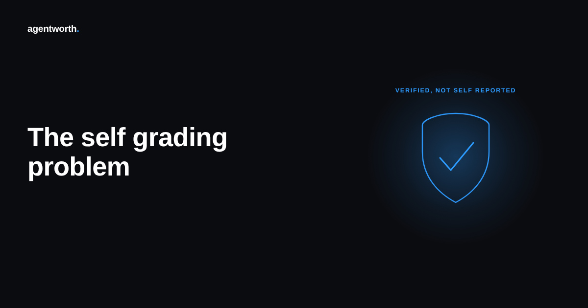

The self grading problem in AI agent ROI reports

Open the slide. Ninety one percent resolution rate, forty percent cost reduction, a number at the bottom that makes the whole deck look like it was worth building. Now ask one question before anyone signs off on it. Who ran the test, and who graded it.
In most AI agent rollouts, the answer is the same company. The platform that runs the agent is also the platform that counts the tickets it closed, decides which ones count as resolved, and hands finance a percentage with no raw data attached. That is not a scandal. It is just a structural fact about how most ROI numbers get made, and it is worth naming plainly before the number goes in front of a board.
Who actually wrote the number you are looking at
Ask three questions about any AI agent savings figure before you trust it. Who decided what counts as a successful resolution. Who has access to the raw session logs behind the summary. And who benefits if the number comes out higher. When the same vendor answers all three, the number is not false, but it is not independent either, and those are very different things to hand to someone who has to defend it in a budget review.
Most vendors are not hiding anything on purpose. Their dashboard genuinely reflects how their system sees its own work. The trouble is definitional, not dishonest. A platform that scores its own deflection rate gets to pick the easiest honest definition of success, and over a few release cycles that definition tends to drift toward whichever one produces the better looking chart.
Why self graded numbers drift in one direction
Nobody sets out to inflate a metric. It happens through a hundred small, reasonable seeming choices. Counting a ticket as resolved the moment the agent stops responding, before anyone confirms the customer is actually satisfied. Measuring against tickets routed to the agent rather than total support volume, which quietly shrinks the denominator. Treating a human correction as a successful handoff rather than a failure the agent should be charged for. Each choice is defensible on its own. Stacked together, they move the number in exactly one direction, and nobody inside the system doing the counting has a reason to notice.
This is the same reason audited financial statements exist at all. Not because every company lies about its revenue, but because a number that grades its own homework will drift toward looking good even when everyone involved is acting in good faith. Finance does not ask for an outside audit because it suspects fraud. It asks because self assessment has a built in direction of error, and that direction is always flattering.
What an independent reading actually requires
A verified ROI number needs three things a vendor dashboard rarely offers on its own. A definition of resolved that was fixed before the measurement period started, not adjusted afterward to match whatever happened. Access to the underlying session log, not just the rolled up percentage, so someone outside the vendor can spot check the claim. And a record of what changed in the methodology between quarters, so a jump in the number can be traced to better performance instead of a quieter definition change.
None of this requires distrust of the team running the agent. It requires treating the ROI number the same way finance already treats every other figure that ends up on a board slide, as something that needs a source trail, not just a headline. That is the gap agentworth's audit log is built to close, keeping an independent record of what the agent actually did so the savings number does not depend on the agent's own account of itself. Try the free ROI calculator to see what an independently counted number looks like for your own numbers, or read the full ROI report for more on what a defensible figure actually requires.